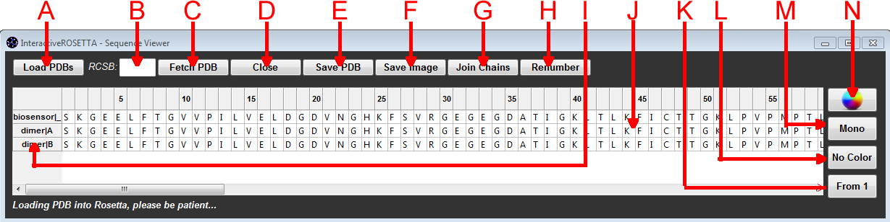

Figure 1: Schematic of the typical contents of the sequence window.
A: Load PDBs Button - Click on this button to search for and load PDB files into the sequence window and PyMOL viewer. If your PDB cannot be loaded, then check the integrity of the file to make sure that there are not residues that are missing large amounts of atoms. Another possible problem could be if you have defined a new residue type and gave it a 3 letter code that is being used to represent a different kind of residue in the PDB file you are trying to load. You can remove residue types by going to your home directory/InteractiveROSETTA/params and deleting the entries that you want to remove.
B: RCSB PDB Code - Enter a four letter RCSB PDB identifier to search for and download via the Internet.
C: Fetch PDB Button - Download the indicated PDB code from RCSB. You will be prompted for whether you wish to desire to save the PDB file locally before loading it into PyRosetta.
D: Close Button - Close the selected chains and remove them from PyMOL and the sequence window. If nothing is selected, this button defaults to closing everything.
E: Save PDB Button - Save the currently selected PDBs. If nothing is selected, this button defaults to saving all loaded PDBs.
F: Save Image Button - Save the current PyMOL view as a PNG image file.
G: Join Chain Button - Join two selected chains into a single chain.
H: Renumber Button - Given a selection of a single amino acid, renumber that chain from 1, starting at the selected residue, making the selected residue the new N-terminus.
I: Chain IDs - This left column of the sequence viewer indicates the identity of the PDB the sequence is coming from and the chain identifier. Double click on an entry over in this column to select the entire row.
J: Sequence Viewer - This grid contains the primary sequences of all loaded chains. You can click and drag to select residues which will then be automatically selected when you enter the PyMOL window. You need to click and drag to select residues (so that there is a light blue highlight); just getting the black box outline is not enough to select things. You may also selected residues and press the "DELETE" key to delete the selected residues.
K: Numbering Button - Click this button to choose between different numbering schemes. "From 1" numbers the grid starting at 1. "PDB #" causes the labels of the columns to reflect the numbering from the PDB files and possibly insert gaps if multiple chains are loaded and there are gaps in different chains. "Align" becomes available after a multiple-sequence alignment from the superimposition protocol. Numbering is from 1 but chains are aligned and contains gaps. Clicking on "Align" will return the numbering to "From 1" and remove the alignment.
L: Sequence Coloring Button - Click this button to toggle between different coloring schemes for the residues in the Sequence Viewer. The default is no coloring, but you may also choose to color by secondary structure or B-factor.
M: Stereo Toggle Button - Click this button to turn the PyMOL stereo view on and off.
N: Background Coloring Button - Click this button to select a new color for the background in PyMOL.